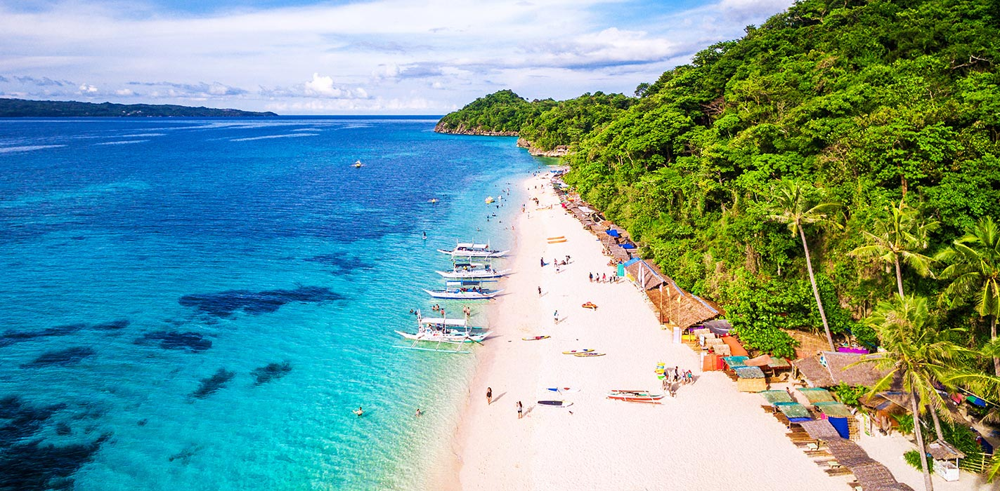

보라카이 섬(Boracay)은 길이 12km의 필리핀의 작은 섬으로 인구는 약 1만 3,000명이다.
보라카이 섬은 아클란 주 말라이, 마녹마녹 바랑가이에 위치해 있으며,
마지막 남은 천국이라 불릴 만큼 때묻지 않은 자연을 지닌 휴양지이다.
보라카이 섬을 세계적으로 유명하게 만든 것은 섬의 대표적인 해변으로 길이 4km의 산호 모래로
된 "화이트 비치"이다. 그 외에도 보라카이는 작지만 아름다운 해변이 많이 있다.
또한, 밤에는 해변가에 위치한 클럽, 펍에 관광객이 북적인다.
보라카이 섬에서는 스쿠버 다이빙, 다이빙 헬멧, 스노클링, 윈드서핑, 카이트서핑, 패러세일링과 해수욕을 즐길 수 있다.